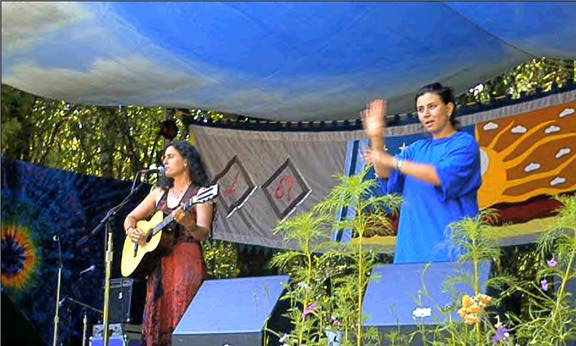

(The image above is from http://www.amp.org/alice/photos.html, which is no longer extant.)
Note: If a link is followed by this icon: , it contains ASL as a video. Other Sign Languages are identified by a flag of their country and this icon:
, it contains ASL as a video. Other Sign Languages are identified by a flag of their country and this icon: 
 ibfound93. (2008, 6 April). Justin McRoberts. 2007 Christmas song.
ibfound93. (2008, 6 April). Justin McRoberts. 2007 Christmas song.
MirPwns. (2006, July 5). Keith Wann. Keith Wann is a hilarious CODA comedian. I took a few of his classes at a silent weekend in Tampa.
Keith Wann is a hilarious CODA comedian. I took a few of his classes at a silent weekend in Tampa.
sign language singers. Really cute!
Really cute!
Let's call the whole thing off - A Deaf parody of Ira Gershwin's song by David Bar-Tzur
Keith Wann. Watching two worlds collide and My experience... different.
Watching two worlds collide and My experience... different.
" orn" - Karaoke for the Deaf or The Guy from the Clip "Music for the Deaf" hits the Big Time - Video [color with Natalie I]. With the help of a comedic mime artist, the words of singer Natalie Imbruglia's song "Torn" are translated into humorous "sign language". An HBO recording. Webmaster's comment: If you're Deaf and want to know the words that are being mimed, here they are:
orn" - Karaoke for the Deaf or The Guy from the Clip "Music for the Deaf" hits the Big Time - Video [color with Natalie I]. With the help of a comedic mime artist, the words of singer Natalie Imbruglia's song "Torn" are translated into humorous "sign language". An HBO recording. Webmaster's comment: If you're Deaf and want to know the words that are being mimed, here they are:
I thought I saw a man brought to life
He was warm, he came around like he was dignified
He showed me what it was to cry
Well you couldn't be that man I adored
You don't seem to know, seem to care what your heart is for
I don't know him anymore
'Cause I don't care, I have no luck, I don't miss it all that much
There's just so many things thaT I can't touch, I'm torn
I'm all out of faith, this is how I feel
I'm cold and I am shamed lying naked on the floor
Illusion never changed into something real
I'm wide awake and I can see the perfect sky is torn
You're a little late, I'm already torn. torn.
Watching two worlds collide - Ice Ice Baby 2002. Interpreter's nightmare with a rap song.
Interpreter's nightmare with a rap song.
wo years ago, I had my front tooth implanted. The process required that I wear a flipper - or removable false tooth - for 8 months (you can probably guess where this is going...). While interpreting a play one evening, I had to sneeze - there was no controlling it - and as I let her rip, my flipper went flying across the floor.Ê So I had to abandon my poor horrified partner to take over all the interpreting while I crawled across the floor, in the dark, searching for my flipper between the patrons' legs. I was not about to continue interpreting with the spotlight on me, with no front tooth. My ego strength is not THAT healthy... I'm happy to report that the gods and goddesses of The Interpreting World smiled down (with teeth, no doubt) upon me and I found the flipper quickly, popped it back in, and returned to my task. I endured some snickering from the audience, but overall, no one had a heart attack (except maybe my partner).
 ow I have to 'fess up to doing "something" while music was playing without words. I interpreted for the "Day to be Gay" festival in Callacoon, NY, and there was a great comedy song called "Betty Boop and Buddha". During the few moments of scat singing that occured three times between the verses and was reminiscient of the Roaring 20's (as was the music itself) I did the Charleston. I admit it, and I will go to Interpreter Hell for it, but it was worth every second!
ow I have to 'fess up to doing "something" while music was playing without words. I interpreted for the "Day to be Gay" festival in Callacoon, NY, and there was a great comedy song called "Betty Boop and Buddha". During the few moments of scat singing that occured three times between the verses and was reminiscient of the Roaring 20's (as was the music itself) I did the Charleston. I admit it, and I will go to Interpreter Hell for it, but it was worth every second!
Iceworm performances. Up to six minute clips.
Up to six minute clips.
 nterpreting for musical theater, choral
performances, concerts, and the like, means that you're working for a
self-selected audience (visience?). They *want* to go see Pink, or the
Vienna Boys' Choir, or A Chorus Line. The music is an integral part of
the experience.
nterpreting for musical theater, choral
performances, concerts, and the like, means that you're working for a
self-selected audience (visience?). They *want* to go see Pink, or the
Vienna Boys' Choir, or A Chorus Line. The music is an integral part of
the experience.
Now, say, interpreter X is at an event where for some reason, they play the theme from Star Trek (the original series with! All the! Bad... acting!). Since the interpreter secretly wears Starfleet standard issue underoos, and refers to their Palm PDA as a "tricorder", they actually know the lyrics...
(See Urban legends reference pages: Unthemely behavior.)
.... to the theme music (including the "bonus" disco version). The interpreter offers a stirring rendition, even doing some cool flowy song-sign thing.
Bravissimi. Only thing is, terp X has actually detracted from the event, since a re-hashing of Nichelle Nicole's rendition was not the reason for the event in the first place.
It's the same with this "Taps" thing. Assuming the facts as given were essentially the way it happened, Taps was one element out of an entire service dedicated to honoring those who had their lives snuffed out in one ghastly, malevolent stroke. Interpreting little known, post hoc words con-however-much-brio probably did not reflect the reason for playing those twenty-two plaintive notes. A pretty smart guy once said, "The brave men, living and dead, who struggled here have consecrated it, far above our poor power to add or detract." Not bad words to interpret by, in this case.
know of one case where Tom Lehrer's "The Elements" (which is sung to something akin to Gilbert & Sullivan's "I am the Very Model of a Modern Major-General") was interpreted by pointing to a periodic table:
There's yttrium, ytterbium, actinium, rubidium,
And boron, gadolinium, niobium, iridium,
And strontium and silicon and silver and samarium,
And bismuth, bromine, lithium, beryllium, and barium.
There's holmium and helium and hafnium and erbium,
And phosphorus and francium and fluorine and terbium,
And manganese and mercury, molybdenum, magnesium,
Dysprosium and scandium and cerium and cesium.
And lead, praseodymium, and platinum, plutonium,
Palladium, promethium, potassium, polonium,
And tantalum, technetium, titanium, tellurium,
And cadmium and calcium and chromium and curium.
There's sulfur, californium, and fermium, berkelium,
And also mendelevium, einsteinium, nobelium,
And argon, krypton, neon, radon, xenon, zinc, and rhodium,
And chlorine, carbon, cobalt, copper, tungsten, tin, and sodium.
These are the only ones of which the news has come to Ha'vard,
And there may be many others, but they haven't been discavard.
Here's the song: Elements.
.... whatever works. It still takes skill, what with how he's not singing them in order. :-)
have been reading the discussions of interpreting music without words...
well at least presented without words whether there orginially were words
associated with the song or not.
I had been thinking along the DeafBlind interpreting vien as well. I'm going to relay a personal DB terping experience here. With a student that was DeafBlind (totally blind, could hear enough that he LOVED music, though did not have discrim for words spoken), there were times he would ask me to sign the music. I tried to say, "Well, this doesnt have words, just music to it." Eventually I wound up making motions that were not signs, but followed the flow of the music to add a tactile sensation to the auditory he received. He loved this and would ask for it from time to time. I definitely explained that this was NOT interpreting of words, and that everyone interprets this differently.
Also interpreting music class with him was a challenge. ;o) The level between words, rhythm and such was an interesting mix to try to represent. He enjoyed this class, and also enjoyed playing instruments. He had rhythm and could apply it well. We developed our own little technique for all this. Luckily he is a smart kid and has fantastic memory skills! (side note -- he also will "sing" songs that he knows. Yes, the words are not formed perfectly, but he sings it as he hears it -- and with his new aids, his singing is improving!)
There would be school assemblies with music, some with words, some without. We also had the City Ballet come for performances; we took a field trip to see the Nutcracker. This may seem kinda odd to many folks, but this was part of his education. The Nutcracker experience was explained as the story -- different versions and such. When at the ballet, he received the visual information that mostly focused on the story, interpreting what the characters were doing, not so much how they were moving. When the ballet comes to the school, they come and perform different pieces as well as talk about values (teamwork, cultural diversity, that kind of thing). The spoken message is conveyed, but also some descriptions takes place of the dancing as well.
Before the assembly, we give the students (all deaf and the deafblind student as well) a chance to check out ballet shoes, talk about movement, etc. Some of this preconferencing comes in handy later with descriptions as he can apply the information he just learned. Do I think he gets the same experience the deaf children got visually? No. Do I think he got the same experience of the hearing children that watched and listened? No. But I do believe he was able to enjoy the music and find out more how people use their body for self expression. This can ties into his IEP goals for movement, in trying to have balance, transitions from one position to another (standing from sitting, etc.)
With not experiencing sight he does not have the experience of seeing how others move, and using that to apply to walking, running, or things like that. Through regular times in PT, he has been exposed to expectations, and they have been interpreted trying to tie in classifiers that are comprehendable in tactile sign. Using these classifiers while interpeting a dance, ties in some of those movements. We have also taken it to the next level and taught him some basic dance. This works with spatial awareness, awarenss of others (partner), rhythm (which can also be used in the context of speech and reading), balance, coordination, etc.
Now all of the things I have describe are about one child. I dont know how this would apply to another DB child. Each person is different. :o) Also trying this with an adult is a different ballgame. By the time they are adults, they have opionions about what they want and don't want in an interpretation. If I can find those things out, then I will do the best to match those expectations. When it comes to DB interpreting I don't feel strange if there is a request to add motion to music. I dont feel strange trying to describe the motion of dancers on a stage.
To more specifically address the DeafWay experience with opening ceremonies -- well I wasn't there, I had to rest after the long registration lines that day! ha! But I do know there would be limitations to interpreting that material if I looked at it as trying to convey the cultural meaning that came from the performances. Frankly I don't have enough experience or knowledge about all those varying cultures to be able to interpret that intent. The best I could do was try to describe it. I'm sure that evening was difficult and tiring!! My hats off to the DB interpreters and SSPs that worked so hard at the conference!!!
I find interpreting music is a touchy subject for many interpreters. There are those that think music is a waste of time, others that think it is vitally important, some that use it to show off, and some that hope they never have to sign a song. I have also seen a lot of judgement from interpreters about other interpreters on HOW an interpretation was done. Personally, I like to watch others, and steal from them ;o) I get wonderful material that way, and I also look at things with a different prespective! Yes, I may have a preference for doing it another way, and some things I see I don't like... but that still helps me anyalyze what I do and to challenge myself to do a better job.
I don't do a LOT of music interpreting (aside from those dreaded assemblies with the middle school chorus that are not clear AT ALL!) But I do use music as a motivator, for me. I listen to music on the radio, then I try to think what does it mean, and how can I represent it. Doesn't make me a professional at it, but it does enhance my regular interpreting. It also gives me joy in tying the two worlds together for me. So therefore, I just do it for me if at all possible.
Return to the table of contents for "Humor and stories for interpreters".